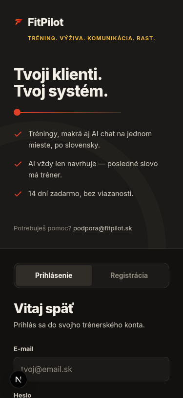

Appka pre fitness trénerov na Slovensku a v Česku
Klienti, tréningové plány, strava aj AI asistent na jednom mieste. Bez tabuliek, bez chaosu v desiatich rôznych appkách.
Žiadne záväzky. Ozveme sa, len keď appku spustíme.
Administratíva ti kradne čas, ktorý patrí klientom
Väčšina trénerov dnes vedie klientov naprieč tabuľkami, poznámkami v telefóne a správami rozhádzanými po viacerých appkách. Tréningový plán je v jednom súbore, jedálniček v inom, komunikácia s klientom v treťom. Výsledok: hodiny administratívy týždenne namiesto času s klientmi.
Všetko, čo potrebuješ na jednom mieste
Klienti a tréningové plány
Priraď plán klientovi za pár sekúnd, vyber cviky z knižnice s obrázkami a inštrukciami, sleduj jeho progres bez papiera a tabuliek.
Strava a makrá
Sledovanie stravy a makier ako plnohodnotná súčasť appky od začiatku, nie platený doplnok navyše. Výpočet cieľa priamo z veku, váhy, výšky, aktivity a cieľa klienta.
AI asistent
AI kouč pre klienta odpovedá v kontexte jeho profilu a plánu (pri zdravotných témach eskaluje na teba, nikdy nediagnostikuje sám). Appka ti generuje tréningové aj jedálne plány, sumarizuje progres klientov a upozorní, na koho z portfólia sa treba pozrieť. Ty máš vždy posledné slovo — appka nič neposiela klientovi bez tvojho schválenia.
Prehľad na jednom mieste
Dashboard so všetkými klientmi, plánmi a progresom bez prepínania medzi appkami, mobile-first pre teba aj pre klienta.

Celé portfólio klientov, na prvý pohľad.
Appka, ktorá myslí po slovensky aj po česky
FitPilot je od základu stavaný pre slovenský a český trh — nie globálny nástroj len dodatočne preložený. Rozhranie, komunikácia aj podpora sú v tvojom jazyku.
Appka aj pre teba, ak nemáš trénera
FitPilot je primárne stavaný pre trénerov a ich klientov, ale jednotlivé nástroje appky vieš používať aj úplne samostatne — bez trénera. Sledovanie stravy a makier, jedálniček aj tvorbu vlastných tréningových plánov si vieš viesť sám, vo svojom vlastnom tempe, a kedykoľvek sa vieš prepojiť s trénerom (alebo od neho odpojiť) bez straty svojich dát.
Čo ešte prídeme dorobiť
Appka je funkčná už dnes — klienti, tréningy, výživa aj AI sú naostro. Čo ešte pribudne: platby priamo v appke, exportovanie plánov a jedálničkov, a fotoprogres na sledovanie zmeny postavy v čase.
Buď medzi prvými trénermi na Slovensku a v Česku
Časté otázky
Pracujeme na tom, aby FitPilot čoskoro spustil naostro pre trénerov aj jednotlivcov na Slovensku a v Česku. Zapíš sa na čakaciu listinu a dáme ti vedieť ako prvému.
Cenník ešte finalizujeme, ale od začiatku sľubujeme transparentnú cenu bez skrytých poplatkov.
Áno. FitPilot je od základu stavaný pre slovenský aj český trh, nie len preložený dodatočne.
Nie. FitPilot funguje aj samostatne — sledovanie stravy, makrá aj vlastné tréningové plány si vieš viesť aj bez trénera. Appka je ale primárne stavaná pre trénerov a ich klientov.
Klientov a tréningové plány (s knižnicou cvikov s obrázkami), sledovanie stravy a makier, obojsmerný chat, AI kouč pre klienta aj AI generátor plánov a sumarizácia progresu pre teba — všetko na jednom mieste, bez prepínania medzi appkami.
Áno. Appka beží na zabezpečenej databáze s prístupom oddeleným po jednotlivých účtoch, a ty aj tvoj klient viete kedykoľvek požiadať o úplné vymazanie dát.